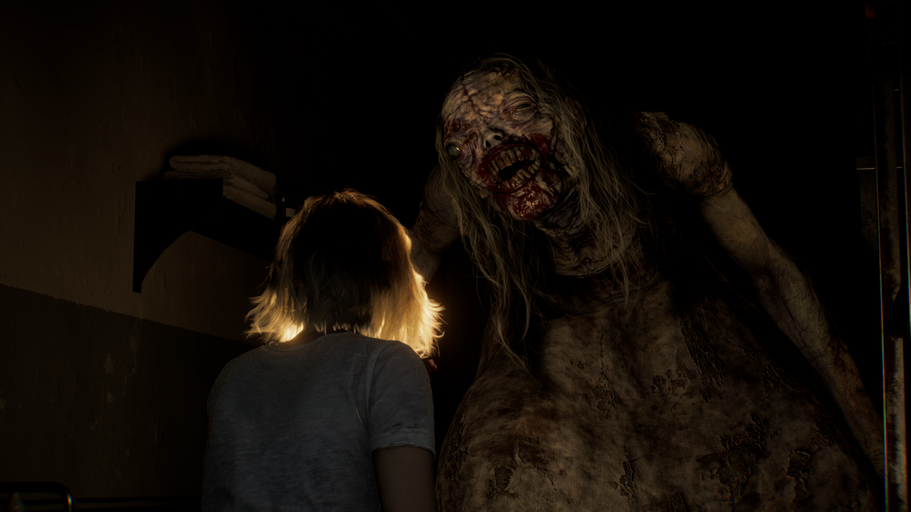
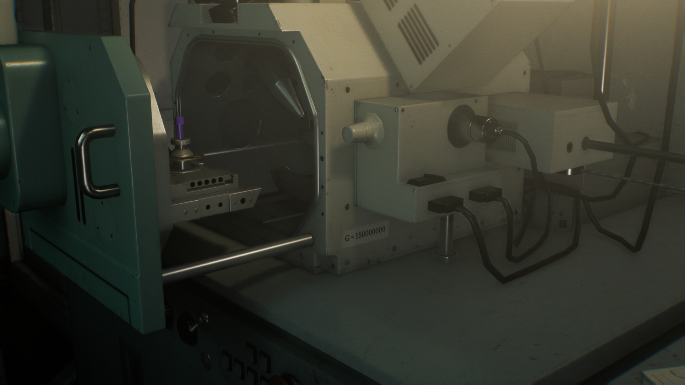

Resident Evil Requiem BioTracker

Total Achievements: 49
Story:
- Achieved by finishing the opening as Grace.
- Achieved by entering the Care Center's basement as Grace.
- Achieved by entering the courtyard.
- Achieved by leaving the Care Center.
- Achieved by descending the Grimstone Building Rooftop as Leon.
- Achieved by returning to the R.P.D. as Leon.
- Achieved by defeating the tyrant as Leon.
Umbrella's Legacy
- Achieved by arriving at ARK as Leon.
- Achieved by exploring ARK's lower levels as Grace.
Challenges:
- Defeat the two singing zombies in the Care Center. This can be done as Leon.
- Defeat the chef zombie in the Care Center. This can be done as Leon.
- As Grace, use Requiem to stun The Girl.
- As Leon, defeat 9 Plant 43 seedlings. The seedlings are located in the ravine before reaching the Service Entrance.
- As Grace, defeat Chunk. Use 3 Hemolytic Injectors or 2-3 Requiem shots.
- Complete the game without using herbs or med injectors.
- Complete the game without using the blood collector as Grace. Do not pick up the blood collector to avoid using it.
- Complete the game within 4 hours, you must release Elpis and defeat Victor Gideon.
Collectables:
- Destroy 1 of 25 Mr. Raccoon figures. Refer to "You Little Rascal!" for more information.

- As Leon, open all 3 of the BSAA containers. They are located outside The Applegate Hotel, in the Central Camp, and away from the main area past the Gas Station.
- Open all 5 safes in the game. They are located in the Bar & Lounge, the Examination Room, the Basement in the room before the Inspection room, the Sterilization Chamber, and in the Monitor Room.
- As Leon, craft all the craftable items.
- Destroy all 25 Mr. Raccoon figures.
- Unlock and view all the models through the Bonus Content Rewards.
- Find and read all the files.
- Unlock and view all the concept art through the Bonus Content Rewards.
Miscellaneous:
- As Leon, use a weapon an enemy dropped. This can be done during the beginning section in Wrenwood.

- As Grace, interact with an item box, earliest location in the Guard Office save room.
- In the Blood Lab as Grace, pick up the Blood Specimen (Denatured) in front of the microscope, then use the microscope to unlock a crafting recipe.

- As Grace, pick up or craft a Hemolytic Injector, then use it on a zombie. One can be found in the Examination Room.

- As Grace, craft an item after picking up the Blood Collector from the Blood Lab.
- As Grace, locate a lockpick (Office, Custodian's Office, or Lead Researcher's Office) and unlock a simple lock (Outside Chairman's Office, near the seats outside of the Restroom, the East Wing Lobby).
- As Leon, stun a zombie and use his hatchet to perform a finisher. This can be done by shooting a zombie until the hatchet icon appears on their head.

- As Leon, parry an enemy when they attack you. Check your settings to learn what your parry button is.
- As Leon, use a supply box and credits to upgrade any weapon.
- As Grace, use the Blood Collector to collect a total of 300 microsamples of blood.
- As Leon, use a supply box and credits to purchase an item.
- Defeat a total of 300 enemies. This achievement can easily be farmed as Leon.
- As Leon, shoot and stun Victor when he's about to perform an attack on the highway.
- As Grace in Standard (Classic) or Insanity difficulty, save at a typewriter using an ink ribbon.
- Defeat 3 enemies with 1 Requiem shot. This can be attempted as Grace in the hallway outside of the Waiting Room before triggering Chunk.

- In the hospital wards, make a zombie attack another zombie. This can be attempted as Grace in the Waiting Room. Use an empty bottle to hit the maid zombie, which will trigger the patient zombie to attack.
- As Leon, earn 200,000 credits through killing zombies or collecting tracking modules.
- As Leon, use the hatchet to cut the tongue off a Licker. When encountering a Licker in ARK, wait for the Licker to attack with its tongue, then parry the attack.
- As Grace, use the Blood Collector to collect a total of 5,000 microsamples of blood.
Complete Runs:
- Complete the game on casual difficulty or higher.
- Complete the game by releasing Elpis.
- Complete the game on Standard (Modern) difficulty or higher.
- Complete the game on Standard (Classic) difficulty or higher.
- Complete the game on Insanity difficulty.